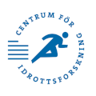

Citation
Please cite original source publications when using content in your research. For dataset-specific references, check the details within each module.
Main publications underlying the data:
- Abdelmoez AM, Sardón Puig L, Smith JAB, Gabriel BM, Savikj M, Dollet L, Chibalin AV, Krook A, Zierath JR, Pillon NJ. Comparative profiling of skeletal muscle models reveals heterogeneity of transcriptome and metabolism. Am J Physiol Cell Physiol. 2020 Mar 1;318(3):C615–C626. https://doi.org/10.1152/ajpcell.00540.2019
- Pillon NJ, Gabriel BM, Dollet L, Smith JAB, Sardón Puig L, Botella J, Bishop DJ, Krook A, Zierath JR. Transcriptomic profiling of skeletal muscle adaptations to exercise and inactivity. Nat Commun. 2020 Jan 24;11(1):470. https://doi.org/10.1038/s41467-019-13869-w
Credits
- Programming: Nicolas J. Pillon
- Illustration and design: Cécile Pillon Hue
- Computation: RNA sequencing computations were supported by SNIC via UPPMAX under Projects SNIC 2021/22-91 and 2021/23-126.
Funding
This work was supported by several institutions including:
- Marie Sklodowska-Curie Actions (EU Commission)
- Novo Nordisk Foundation
- Swedish Diabetes Foundation
- European Foundation for the Study of Diabetes (EFSD)
- Swedish Research Council
- Strategic Research Program in Diabetes (Karolinska Institutet)
- Swedish Research Council for Sport Science
- Forska utan Djurforsök (Foundation for Research Without Animal Testing)

Copyrights
All content and code are published under the Creative Commons Attribution-NonCommercial 4.0 International License.